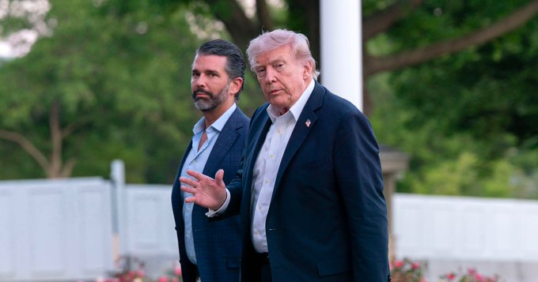
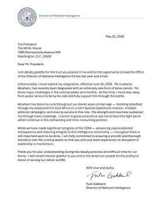
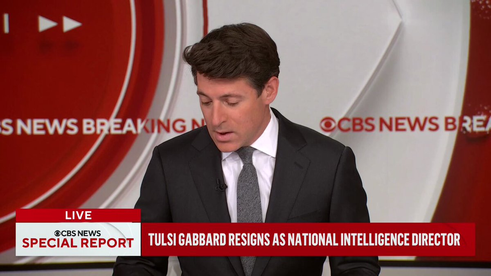
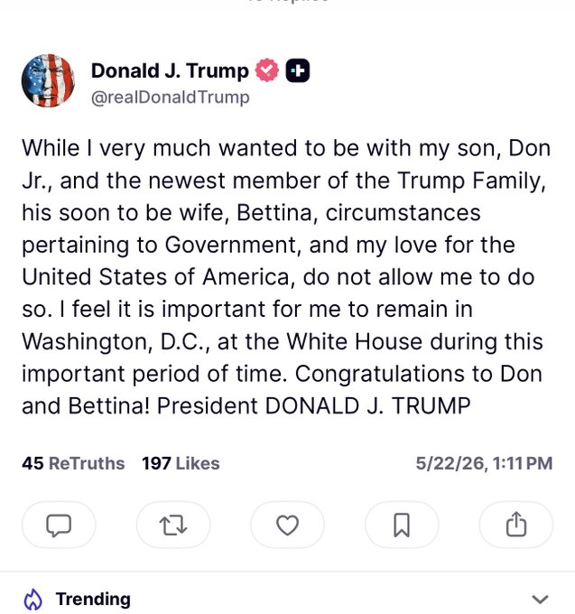
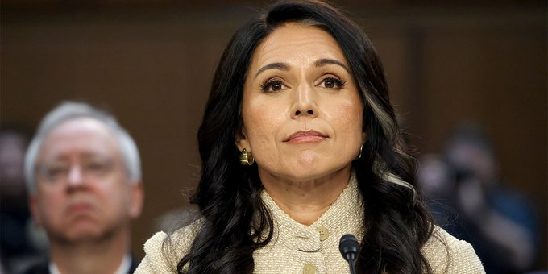
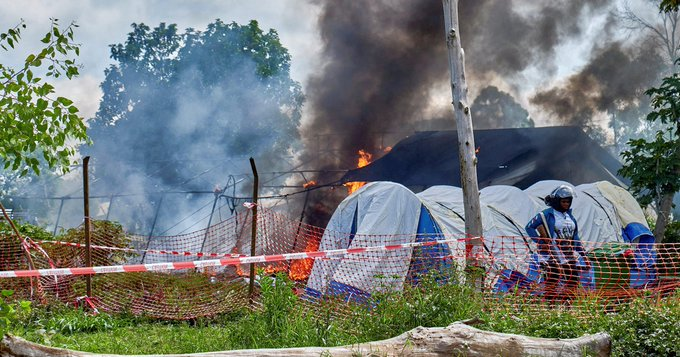
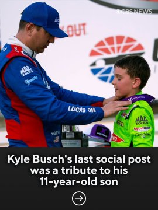
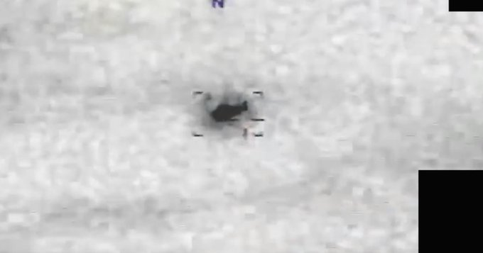
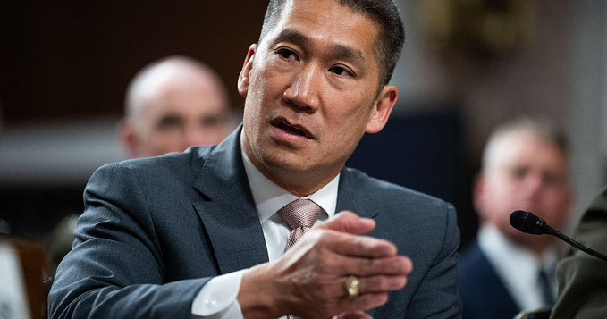
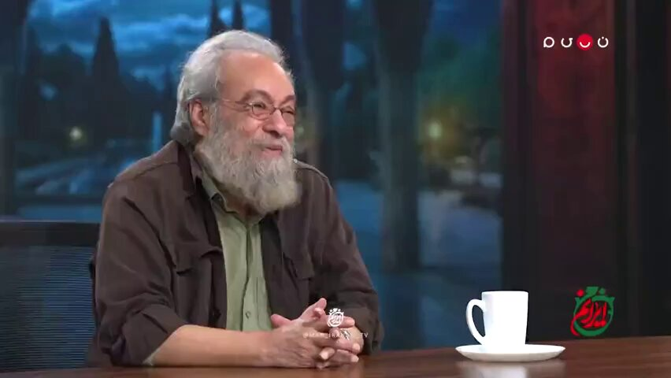

@CBSNews
📝 原文: Senate Armed Services Committee Chair Sen. Roger Wicker (R-MS) says "we must finish what we started" in Iran.
🇨🇳 译文: 参议院军事委员会主席参议员罗杰·威克（R-MS）表示，“我们必须完成我们在伊朗开始的事情”。

🕒 2026-05-22T18:30:00+00:00
| 来源 | 旧窗口内数量 | 本次新增 | 本次淘汰 | 当前窗口内共有 |
|---|---|---|---|---|
| 推文 + Dawn 新闻 | 0 | 48 | 0 | 48 |
| ARY News | 0 | 10 | 0 | 10 |
注：淘汰数 = 旧窗口内数量 + 本次新增 - 当前窗口内共有


















